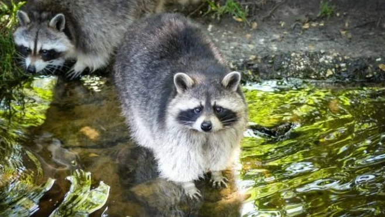
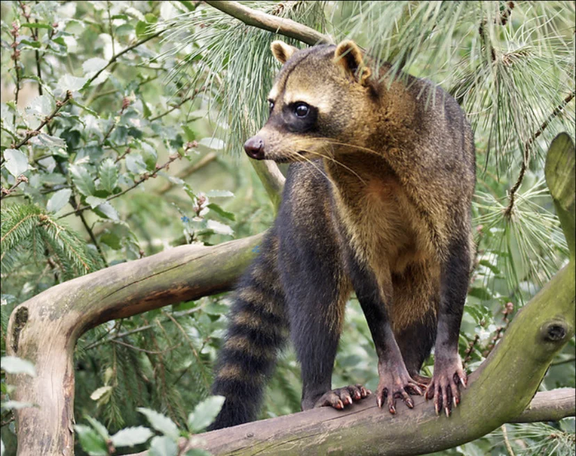
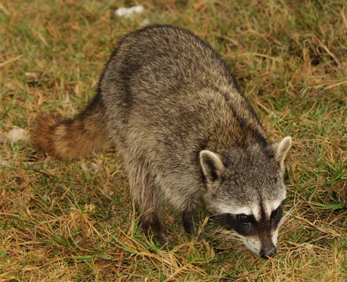
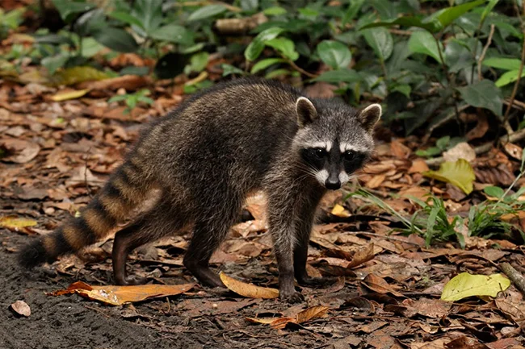
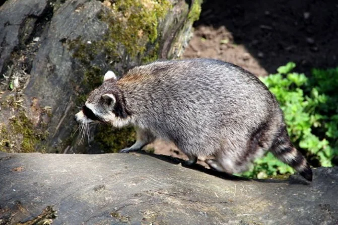
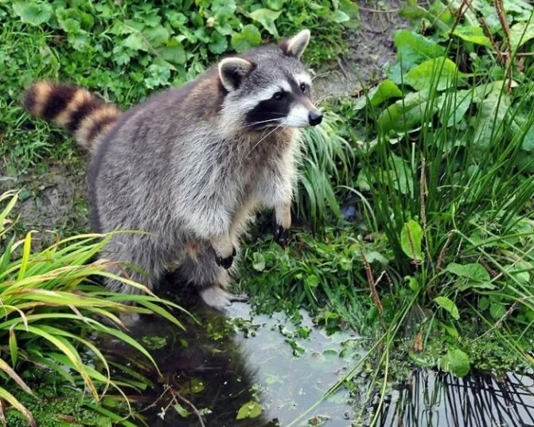

Енот-Полоскун
 Самый многочисленный и распространённый в мире представитель рода, встречающийся на сегодняшний день в Европе, Азии, Северной и Южной Америке. В большинстве регионов этот вид енотов является индуцированным, то есть завезённым искусственно. Причиной такого переселения животных является экономическая выгода — начиная с середины 20х годов енотов массово вывозят из Америки и осуществляют выпуски в лесах Германия и на территориии СССР. Мех енота в то время считался ценными и дорогим, поэтому зверьки пользовались большим спросом. Обладая отличной приживаемостью, полоскуны легко адаптировались на новых территориях и постепенно переселялись в соседние регионы, не встречая угрозы со стороны других хищников и нанося урон естественной фауне. Представители этого вида енотов отличаются густым длинным мехом, от серо-серебристого до рыжеватого окраса, на 90% состоящего из густого подшерстка, который позволил зверькам комфортно существовать в регионах с экстремально холодной зимой, например на Дальнем востоке России. Кстати, полоскун — единственный вид енотов, впадающий в спячку с наступлением холодов, подобно медведям. Длина тела достигает 60 см в длину, хвоста 20-25 см. Вес енота варьируется от 5 до 13 килограмм, в зависимости от времени года и возраста. В регионах с суровым климатом самцы зимой могут достигать веса 25 килограмм, но это скорее региональное исключение. На мордочке енота отчётливо видна чёрная маска, являющаяся визитной карточкой этих животных. Еноты являются стопоходщими и могут отлично передвигаться на задних лапках, в помощь им длинный полосатый хвост, служащий дополнительной опорой. Отдельного внимания заслуживают передние лапки, пятипалые, схожие с человеческими руками. Благодаря им енот успешно охотится и лазает по деревьям. Продолжительность жизни енота-полоскуна в дикой природе невелика, составляет всего 3-5 лет, сказывается неразборчивость в питании, другие животные, чрезмерное любопытство, заставляющее попадать в опасные ситуации. В Европе главный враг енота автомобиль, т.к зверьки все чаще покидают леса и предпочитают селиться поближе к населённым пунктам и мусорным свалкам. В домашних же условиях енотик может прожить до 20 лет, став верным другом для тех, кто осмелился завести себе такое экзотическое и сложное животное дома. Рацион енота полоскуна составляет растительная и животная пища, зверьки полностью всеядны. Поедают насекомых, птиц, грызунов, ловят рыбу и раков. В качестве лакомства предпочитают сладкие ягоды, фрукты, овощи и орехи.
Енот Ракоед
 В отличие от своего собрата полоскуна ракоеды живут исключительно на территории Южной Америки и предпочитают тропические леса, болота и побережье океана. На своей родине у зверька есть второе имя — агуара. Этот вид енотов впервые был описан 1798 году французским ученым биологом Жоржем Леопольд де Кювье. Как и положено еноту, мордочку украшает чёрная маска и по всей длине хвоста расположены темные кольца. Зверьки являются всеядными хищниками, но основу рациона составляет морская и речная живность, отсюда и название «ракоед». В ряде регионов енот ракоед признан сельскохозяйственным вредителем, нанося урон выращиваемым злаковым и овощным культурам. Ещё одним отличием от полоскунов и особенностью ракоедов является желтовато-коричневый короткий грубый мех. У зверьков почти полностью отсутствует подшерсток, поэтому они не приспособлены к жизни в холодном климате. Однако мех енота ракоеда так же считается ценным и пользуется большой популярностью в Южной Америке. Рост в холке не превышает 23см, поэтому визуально ракоеды выглядят значительно мельче полоскунов. Вес тела не превышает 12 кг, а средняя продолжительность жизни в дикой природе 5 лет. Зверьки не пользуются большой популярностью в одомашнивании, но рядом с человек способны прожить почти в 3 раза дольше.
Косумельский енот
 Ареал обитани Косумельского енота остров Косумельский у берегов Мексики, в своей естественной среде является самым малочисленным видом и находится на грани вымирания. В настоящее время осталось всего 300 особей. Зверьки селятся в мангровых и дождевых лесах, основу рациона составляют крабы, но охотятся также на лягушек, насекомых и ящериц. Шерсть косумельского енота короткая, имеет серо-коричневый окрас с желтоватым хвостом. Вес животных всего 3-4 килограмма, а продолжительность жизни в дикой природе до 5 лет.
Гваделупский енот
 Гваделупский енот обитает в морской части Франции — Гваделупе в Карибском море и на Малых Антильских островах. Внешний вид зверьков очень похож на енота-полоскуна, но имеет некоторые физиологические различия, по которым их вывели в отдельный вид. Гваделупский енот также находится под угрозой исчезновения и охраняется правительством. Зверьки населяют влажные болотистые леса с обязательным выходом к водоему. Днем отдыхают в дуплах деревьев, а ночью выходят на охоту. Размер тела составляет в среднем 50-60 см, а вес варьируется от 2,5 до 15 кг.
Трессмариасский енот
 Трессмариасский енот является подвидом енота-полоскуна и проживает на островах Марии в Мексике. Внешне зверьки похожи на полоскунов, но более крупные по размеру. В длину достигают 90см и отличаются более угловатым черепом. Мех трессмариасского енота короткий, более светлого окраса, чем у полоскунов с характерным коричневым подшерстком в области живота. Из-за большой популярности среди местных охотников, этот вид енота оказался под угрозой исчезновения и в настоящее время насчитывает менее 250 особей. Тресмариасский енот является всеядным хищным млекопитающим, рацион составляет растительная и животная пища, рыба и морепродукты.
Багамский енот
 Багамский енот так же является подвидом енота-полоскуна, и населяет исключительно Багамские острова Карибского моря. Этот вид енота является эндемиком Багамских островов. Длина тела достигает 50см, хвоста 20-30см. Мех багамского енота серо-серебристого окраса с рыжими опалинами в области груди. Встречаются также особи черного цвета, без характерных для енота темных колец на хвосте, однако с хорошо выраженной маской на мордочке. В конце 20 века багамский енот был включён в список животных, находящихся под угрозой исчезновения, истребляемый человеком ради ценного меха и мяса. Питается енот грызунами, птицами, насекомыми, фруктами, овощами и орехами. Мастерски ловит рыбу и раков.